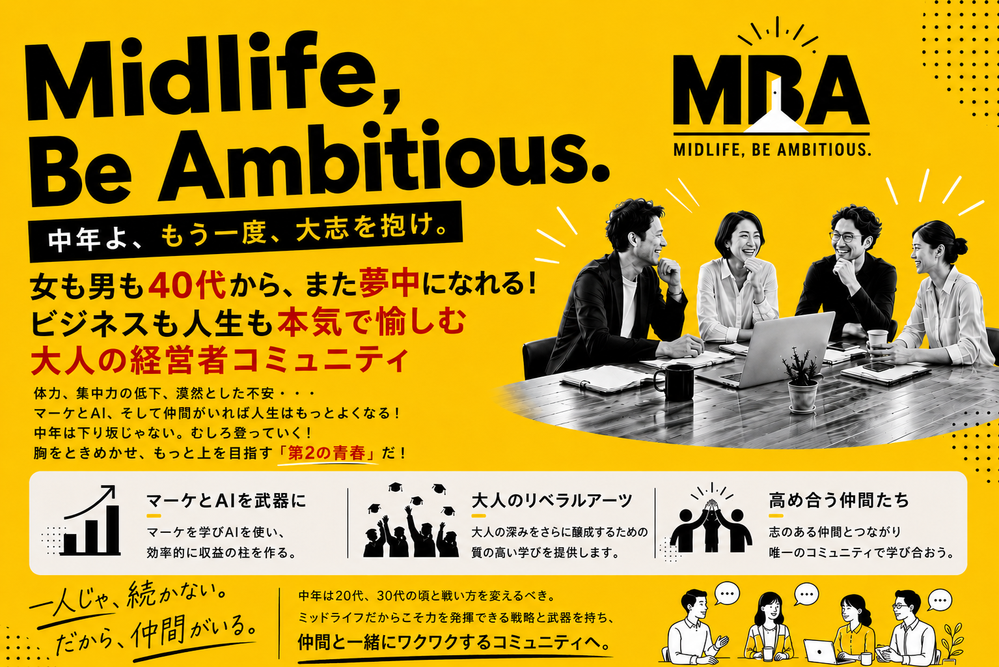
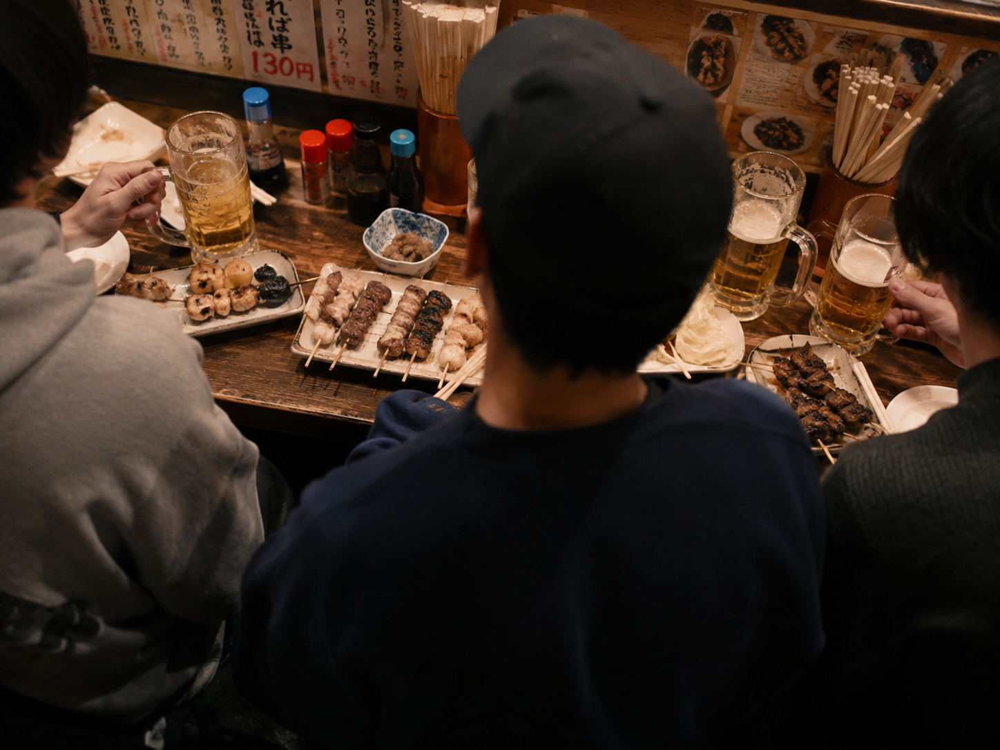
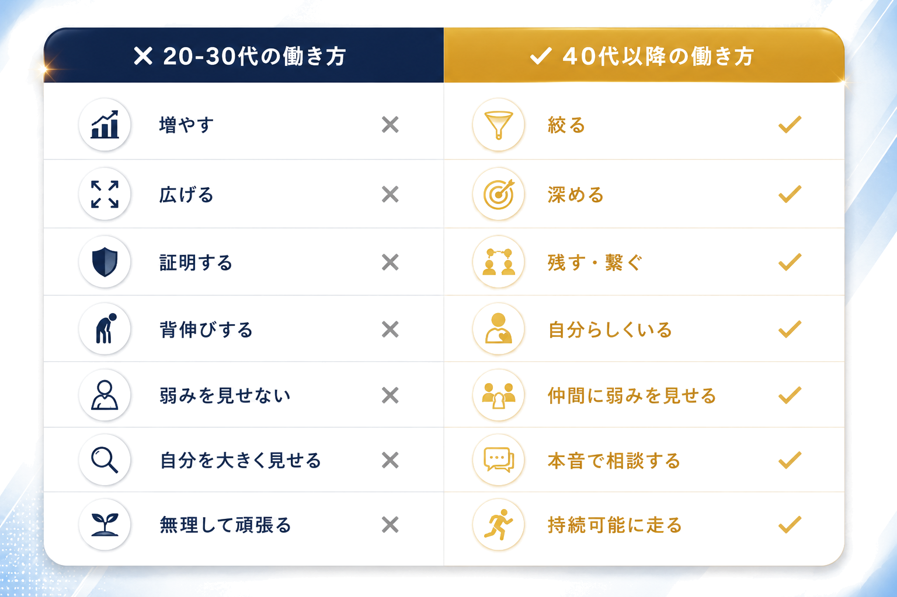

プロジェクトを立ち上げた3人
MEMBER 01
真井 良幸
wombase株式会社 代表
2008年から Catch the Web で広告責任者として全広告を担当。その後、wombase設立。15年間、社員を雇わない自由なひとり起業家として、すべてのマーケティングを自ら実践。現在はその経験を活かし、価値観型の起業家にAIも活用した価値観型マーケティングを広める活動をしている。
MEMBER 02
松井 宏晃
株式会社Catch the Web 代表
大手証券会社で営業を経験後、Catch the Web に入社。代表取締役として約15年陣頭指揮。店舗ビジネス・中小企業のマーケ案件を多数手がけ、自社プロダクトも継続的に売れ続ける仕組みを設計してきた。
MEMBER 03
高江洌 亮
株式会社C-links 代表
外資系コンサルティング会社を経て Catch the Web で役員、その後独立してC-links設立。コンセプト設計からセールスまで総合プロデュースでマーケ支援を実施。約20年マーケ畑を歩み、近年はAIを使った業務効率化を本格実装。
僕たちはその日、本当に幸せに成功する方法が何かを、
東京・五反田のもつ焼き屋で語っていた。
20代で出会い、マーケの世界にどっぷりと浸かり、
独立したり、会社を経営したり、それぞれの道に進みつつ、
十数年ぶりに3人で集まった。

煙と熱気が充満したお店の中で、
もつ焼きとビール、レモンサワーを片手に話題に上がったのが、
「中年が楽しく、幸せに成功するには？」
というテーマ。
僕たちは40代。
出会ったときはまだ怖いもの知らずの20代で、
体力任せでやりたいことをブルドーザーのように進めることができた若者だった。
多少疲れていても無理ができたし、
目の前の仕事が面白くて夢中で働いていた。
そして3人は立派な中年になった。
これから50代、60代、70代になっていく僕たち3人は、
20代、30代の頃と同じくらいに、いやそれ以上に、
心がときめくようなワクワクする毎日を生きて
第2、第3の青春を謳歌していきたいと思っている。
でも体力も落ちた、集中力も落ちた、おまけに視力まで落ちた。
若い時と同じような戦い方を続けることができないことも自覚している。
そんな僕たち3人だけれど、
ここまで歩いてきた道のりで、
それぞれが自分の事業を持ち、自分のフィールドを築いてきた。
もちろん3人とも大人だから、
お互いどれだけの収入があるのか、
どれだけの資産があるのかなんて野暮なことは話さない。
けど、それぞれ会社を経営し
平均的な人よりも自由で豊かな暮らしはできている。
「でも、それだけじゃ物足りない」
そう感じるようにもなった。
そして五反田のもつ焼き屋で、
アイデアが浮かんだんです。
「同じ中年以降を熱く生きる仲間と一緒に
面白いことをやれたらいいよね」
「中年よ大志を抱け！って感じで、
ミドルエイジになっても熱量高く
人生を楽しむコミュニティを作ってみない？」
と。
「いいね！やろうよ！」
と、若者みたいなノリで始まったのが
今回の企画でありコミュニティという場。
まずはこのページを最後まで読んでみて、
「なかなか面白そうじゃないか」
と、あなたが共感する部分があったら、
まずは僕たちの仲間になってみて欲しい。
中年よ大志を抱け。
そうすることで世界はもっと面白くなるし、
僕たちの人生は間違いなく胸がときめくものになる。
それが今回あなたをお誘いする、
30〜60代の中年経営者が
今の何倍ももっとワクワクした
ビジネスと人生を目指していく
経営者コミュニティMBA
（Midlife Be Ambitious）です。
※ フリーランスの方、1人起業家の方、これから起業を目指すサラリーマンや主婦の方もこのコミュニティに参加いただけます。
少し長いメッセージになりますが、
今から10分ほど時間をとって僕たちの思いとアイデアに
耳を傾けて欲しい。
僕たちからの提案
「面白いコミュニティを作ろうよ！」
という話にはなったけど、
じゃあ具体的に何をやるのがいいのか。
メンバーが集まる中心には、必ず「テーマ」が要る。
そのテーマが、自分たちの中から自然に湧き出るものでなければ、
続かないし、語る言葉に熱量が乗らない。
そう考えた時に、
僕たちがまず「コア」として持っているのは、
マーケティングの知識と経験だった。
これまで約20年、
マーケティングの世界にどっぷりと浸かってきた。
通販、サブスク、コンサル、教材販売、サロン運営、SaaS、自社プロダクト、BtoB、マーケティングオートメーション、店舗ビジネス、医療などなど。
業種も商材も入れ替わりながら、
いろんな分野で結果を出し続けてきた3人。
もちろん成功体験だけじゃなく、
思い出したくないような失敗もたくさん共有してきた。
マーケの世界の酸いも甘いも知っている僕らだからこそ、
マーケをテーマに価値あるものを届けられると
思うんです。
そしてもう一つ、今を語る上で外せないテーマがある。
それがAI。
SNSを開けば、うんざりするくらいに
「AIでこんなことができるよ！」
「もうこれを知らないと終わる」
そんな煽り混じりの情報が、毎日のように流れてくる。
でも、その中から「本当に使えるもの」を取捨選択し、
具体的な仕事に当てはめて、
「自分の仕事をちゃんと効率化できる使い方」
ここまで落とし込めている人は、まだほとんどいない。
AIは便利だけど、
単なる検索の延長線上で使っていたり、
悩み相談レベルに留まっている人は多い。
いろんな情報は目にするけど
「自分は若くもないし、
最先端のAIの使い方にはついていけない」
そう思っている人は、本当にもったいない。
僕たちは思う。
中年こそが、AIを味方につけるべきだと。
ミドルエイジこそがAIを使うことで、
可能性を大きく広げることができるんだと。
あなたはミドルエイジ・クライシス
（ミッドライフ・クライシス）という言葉を知っていますか？
いわゆる中年の危機というもので、
主に40代から60代の中年世代が直面する
不安や憂うつな気分になったり、
「自分の人生これでいいのかな・・・」
と、疑問に感じたりする、そんな状態のこと。
もちろん中年になれば体力も衰えてくるし、
昔のように気力も落ちてくる。
「もうちょっと頑張りたいのに
踏ん張れなくなってきた」
そう感じている人は、きっと多いはず。
若い頃の感覚で
「まだまだやれるよ！」
と、思っていても、
現実は自分の衰えを隠し切ることはできない。
だましだまし無理をしていても
体調を崩したり、気分が落ち込んだりして
必ずしっぺ返しをくらってしまう。
僕たちは自覚しないといけない。
純粋な体力や気力というのは、
すでにピークを過ぎている。
今までと同じ戦い方をしていたら、
やっぱり成果は思うように出せない。
単純な体力とかエネルギーで勝負したら、
若い人たちにはどうしても勝てない。
だからこそ、AIを使うべき。
僕たちはマーケや経営にまつわる仕事で、
AIをフルに活用している。
データ分析もAIでやっているし、
デザイン制作や動画編集もAIをガッツリ使う。
市場リサーチ、提案書や企画書のドラフト、
記事・メルマガのライティング、
議事録の整理、スライドや資料の作成、
さらにはサイトのコーディングまで。
これまで何時間、何日もかけてやっていたことが、
AIを使えば数十分、数時間で形になる。
このページだってAIで作っているし、
これまで時間を使ってやっていて、
「面倒だなぁ・・・」
と、思うことをどんどんAIを使って、
自動化したり、効率化してきた。
もちろん僕たち3人は、
AIの専門家ではない。
論文を書ける研究者でもないし、
モデルを作るエンジニアでもない。
でも、AIを使って自分の実務を効率化している「実践家」ではある。
業務の中身を熟知している人間が、
AIを徹底して業務に組み込んでいる。
このポジションだからこそ届けられる、リアルな使い方がある。
100%完璧な答えではないかもしれない。
でも、
「明日からあなたの業務が、確実にラクになる」
「5倍、10倍のスピードで仕事が進められるようになる」
その水準のAIの使い方は、
間違いなく伝えることができる。
常識で考えれば、
40代に入れば人生は下り坂になってしまうかもしれない。
けどAIを使って戦い方を変えれば、
我々の人生はまだまだ上り坂になっていく。
まだまだこれから先に
面白いことがたくさん待っているのです。
現場で使っているAIの使い方。
これをMBAというコミュニティの中で
どんどん共有して、中年の人生に革命が起こるようなうねりを
作っていきたい。
「"AI"を学ぶのは分かったけど、
なぜ"マーケ"なんだろう？」
そう思った人もいるかもしれない。
マーケティングなんて、
営業職や広告業界の人だけが学ぶものでしょう？
自分には関係ないんじゃ・・・
そう感じる人もいるかもしれない。
でも、僕たちは断言します。
中年こそ、マーケを学ぶべきだと。
むしろマーケを学ぶことで、
中年の未来はより明るいものになる。
その理由は、いくつもあります。
①体力勝負ができなくなったからこそ、
「設計」の力が要る。
20代・30代は、勢いと根性で結果を出せた。
徹夜してでも数をこなす。
朝から晩まで動き回って、人に会う。
でも40代以降、そのやり方は続かない。
少ない動きで、大きな成果を出す。
より賢く、より効率的に。
動く前に、設計して当てに行く。
その「設計図」を引くために必要なのが、
マーケティングの知識です。
②マーケは「人を動かす技術」。
すべての仕事に効く"OS"だ。
物を売るのも、サービスを広めるのも、
人を採用するのも、部下を動かすのも、
子供に何かを伝えるのも、
本質的には全部マーケティング。
「相手は何を求めているか？」
「どんな順番で、どう伝えれば動いてくれるか？」
もちろん簡単なことではありませんが、
この「人を動かす技術」が分かっていると、
仕事も、人間関係も、人生全体がラクになる。
1つのスキルで一生使い回しがきく、
数少ない"OS"のような教養です。
③中年の経験は、マーケで初めて"資産化"する。
これまで積み重ねてきた経験・知識・人脈。
そのままでは、自分の中に眠っているだけ。
でもマーケを噛ませると、
それが「商品」になり、「顧客」がつき、
「収益」が生まれる。
20年・30年の経験を持つ中年が、
基礎的なマーケ力を身につけたとき、
ものすごく強い。
なぜなら、
若い人には「経験」がない。
ベテランには「マーケ感覚」が乏しい。
経験 × マーケ感覚。
この交差点に立てるのは、僕たち中年だけ。
④セカンドキャリア時代の"必須教養"。
そして50代・60代になると、
組織から離れる人が増えていく。
独立、副業、第二創業、セカンドキャリア。
その時に必要なのは、
自分の力でお客さんを集めて、商品を売って、人を動かす力。
これができないと、
会社の看板が外れた瞬間に、何もできなくなる。
逆にマーケが分かっていれば、
70代でも、80代でも、自分の腕で生きていける。
「自分の人生は、自分で設計する」
その選択肢を持つために、
マーケは必要だと、僕たちは思うんです。
AIは「武器」
マーケは「OS」
マーケというOSがないままに
AIという武器だけを覚えても、
便利な道具を持っているだけの人で終わる。
OSと武器、
この2つが揃ったとき、
中年からの仕事と人生が、本当に動き出す。
このMBAというコミュニティで、
僕たち3人が20年、約20年積み上げてきたマーケの知見を、
共有していきたいと思っています。
僕たちからの提案 ②
「マーケ × AI」があれば、
仕事は確実にラクになる。
5倍、10倍のスピードで進められるようにもなる。
でも、それだけで「人生が幸せになるか？」と聞かれると、
僕たちは即答できない。
仕事は人生の一部であって、全部じゃない。
20代・30代は、仕事に振り切ることでバランスが取れていた。
売上を伸ばす、評価される、出世する、独立する。
ある意味、シンプルだった。
でも40代に入って、その問いが変わってきた。
「いくら稼いだら、自分は満足するんだろう？」
「成功したい、その先に、何があるんだろう？」
仕事の数字を追いかける一本足では、
そろそろ立っていられなくなってきている。
そして気づいた。
中年からの幸せには、
もう一つの柱が要る。
仕事以外の、人生全般を豊かにする教養。
僕たちはこれを「大人のリベラルアーツ」と呼ぶことにした。
具体的には、こんなテーマです。
【身体】運動・食事・健康・医療
50代、60代を健康に楽しむための知識と習慣。
「衰える」のではなく「整えていく」中年へ。
【人生】運・縁・人間関係
「いい人と出会う」「いい縁に恵まれる」のは偶然じゃない。
設計できるものとして扱う。
【感性】アート・芸術・古典
仕事の論理だけでは育たない、人生の彩り。
40代以降にこそ、本当に味わえるテーマ。
【お金】資産形成・投資・税
稼ぐだけじゃなく「残す・増やす・守る」。
もう一段、自由になるための土台。
ここで、もう一つ大事なことを伝えておきたい。
それは、学びには
「学んですぐ役に立つもの」と、
「学んでから時間をかけて効いてくるもの」がある、ということ。
マーケや AI は、学んだその日から、
明日の仕事に活かせる。
やり方を覚えれば、すぐに業務が楽になる。
新しいフレームワークを使えば、来月の数字に反映できる。
これは「短期で効くスキル」。
すぐに成果が出るからこそ、世の中の関心も集まりやすい。
一方で、リベラルアーツ的なテーマは、ちょっと違う。
学んでから、
半年後、1年後、数年後、
下手をすれば十数年後に、
じわりと効いてくる。
健康への意識を変えたから、10年後の体力が違う。
本物のアートに触れたから、10年後の感性が違う。
若い頃から運や縁を大切にしてきたから、今の人間関係がある。
すぐには、目に見えない。
でも、確実に人生の深いところに沈殿していく。
そういう「長期で効いてくる教養」こそ、
中年こそが、腰を据えて学んでおく必要がある。
短期で効くスキル（マーケ・AI）だけ追いかけ続けると、
気づいたら、外側だけ強くて、中身がスカスカな自分が
出来上がってしまう。
そんな人間には、誰もなりたくないじゃないですか？
逆に、長期で効く教養だけを追いかけても、
明日のご飯を食べるお金は稼げない。
短期で効くものと長期で効くもの、
その両輪が要る。
長期で効くものを、
ちゃんと学んで、自分の中に蓄えておく。
これが、充実した人生を生きるためには、
必ず必要なものだと、僕たちは思っています。
これらは、若い頃には「いつかやろう」と
後回しにしてきたテーマたち。
でも中年になった今、避けては通れない。
そして、こういう話を本気でできる仲間って、
意外と周りにいないんですよね。
会社の同僚とは仕事の話だけ。
家族にはこういう話はしづらい。
若い友人とは、話が噛み合わない。
だからこそ、このコミュニティで、
同じ中年世代と本音で語り合える場を作りたい。
仕事を加速させる「マーケ × AI」
と
人生を豊かにする「大人のリベラルアーツ」。
この2つが揃ったとき、
中年からの第2の青春が本格的に動き出す。
と、僕たちは信じています。
マーケ × AI × 大人のリベラルアーツ。
この3つは、教材として一方通行で学ぶものではなくて、
「部活」として、
仲間と一緒に楽しみながら磨いていくものにしたい。
僕たちはそう考えています。
MBA の3つの部活
CLUB 01
マーケ部
約20年、現場で戦い続けてきた知識・ノウハウ・事例を共有。
添削会・グループ公開コンサル・ケーススタディなどで、マーケスキルを磨いていく。
CLUB 02
AI部
マーケや様々な業務を効率化するための、実践的な知識・ノウハウを共有。
研究者ではなく実践家だからこそのノウハウを、ここでシェアします。
CLUB 03
大人のリベラルアーツ部
身体・人生・感性・お金の教養を深める。
ゲスト講師回・読書会・実体験のシェア。
そして、これだけじゃない。
「中年が楽しく生きるためにやりたいこと」は、
もっといろいろある。
さらに、自由に増えていく部活
CLUB 04
旅行部
みんなで旅に出る。合宿、ワーケーション、海外も。
旅をしながら、人生を豊かにしていく。
CLUB 05
飲み部
お酒を交わしながら、本音で語り合う。
リアルに集まって、人生を充実させる場。
CLUB ??
あなたが立ち上げる部
ゴルフ部？投資部？写真部？ランニング部？
「これやりたい！」があれば、どんどん作ろう。
楽しい場は、参加するメンバーが作るもの。
僕たち3人が枠を作って、
みんなで育てていく。
それが、MBAというコミュニティです。
「最近、頑張っているはずなのに、
なぜか成果が出ない」
「やることは増えているのに、
手応えが薄くなってきた」
「忙しいのに、ちっとも前に進んでいる気がしない」
そんな違和感を、感じていませんか？
実はその違和感、
年齢のせいでも、努力不足でもなくて、
戦い方そのものが、時代遅れになっている。
これが正体じゃないかと、
僕たちは一つの仮説を立てています。
「20代・30代のゲームを、
40代以降もやり続けているから詰まる」
これが、僕たち3人が話し合ううちに
行き着いた答えです。
20代・30代のゲームは、ひとことで言えば
「増やす・広げる・証明する」。
売上を増やす。
人脈を広げる。
ポジションを上げる。
自分の実力を、世の中に証明する。
「とにかく動け」
「数で勝負しろ」
「人より早く、人より多く」
体力も気力もある若い頃は、
このルールで確かに結果が出た。
むしろ、これしか戦い方を知らなかった。
ところが、
40代に入った途端、
このやり方が通用しなくなってくる。
理由は、大きく2つ。
1つは、当然の話だが体力が落ちること。
徹夜は効かない。
回復が遅い。
無理を続けると、体調を崩したり、
気分が落ち込んだりして、
必ずしっぺ返しをくらう。
もう1つは、
40代以降の世界は、そもそも"別ゲーム"だということ。
20-30代は、まだ自分が「プレイヤー」だった。
体力で稼ぎ、数で押し切り、勢いで突破する世界。
でも40代以降は、
「何を残すか」
「誰と組むか」
「どう自分らしく生きるか」
そういう、もっと深い問いに
答えを出していくゲームに、
ステージが切り替わっている。
増やすゲームから、絞るゲームへ。
広げるゲームから、深めるゲームへ。
証明するゲームから、残す・繋ぐゲームへ。
ルールが変わったのに、
前のルールのまま戦い続けていたら、
どんな名プレイヤーでも壊れる。
ここまで読んで、
「自分は、まだ
20代のルールで戦っているかも・・・」
そう、ハッとした人もいるかもしれません。
20代・30代の戦い方と、
40代以降の戦い方は、
具体的に何がどう違うのか。
ちょっと整理してみました。

20代・30代の頃、私たちは「弱みを見せたら負け」と思っていました。
背伸びをして、できないことを「できる」と言って、
自分を実際より大きく見せて、無理をして帳尻を合わせる。
それが戦い方だったし、そのモードで通用してきた。
でも40代に入って、それを続けるのがしんどくなってきた。
背伸びし続けると、足がつる。
40代以降の戦い方は、真逆です。
背伸びを下ろす。等身大で勝負する。
できないことは「できない」と言える。
20代・30代で被ってきた鎧を、そろそろ脱ぐ時期に来ている。
20代・30代の頃は、「弱みを見せたら負け」だった。
でも40代以降は、逆です。
社員にも取引先にも家族にも言えなかったことを、
同じ立場の仲間と本音で話せる。
その場があるだけで、人生のしんどさは半分になる。
体力も気力も限られている中年が、
20代と同じ量を自分で抱え込むのは、もう無理がある。
任せられる作業は、AIに任せる。
自分は「考える・決める・人と会う」に集中する。
これができないと、いつまでも作業に追われて、
肝心のところに時間を使えない。
大博打や流行りものに飛びつくのは、若い時のゲーム。
中年は、地に足のついた「再現性ある稼ぎ方」を、
1つでも持っておく。
マーケ、AI、資産形成、いずれでもいい。
これがあれば、何があっても食えていけるし、
人生の選択肢が一気に広がる。
MBA（ミッドライフ・ビーアンビシャス）は、
3つの軸で動きます。
中年が、若い頃のように体力勝負だけで結果を出し続けるのは、もう難しい。
だからこそ要るのが、「動く前に設計する力」＝マーケティングの知識です。
マーケは、「人を動かす技術」であり、
すべての仕事に効く"OS"のような教養。
商品を売るのも、人を採用するのも、自分の価値を世に届けるのも、本質はマーケです。
そして中年の経験 × マーケ感覚の交差点に立てるのは、
若手にもベテランにも、なかなか真似できない強み。
このコミュニティでは、僕たち3人が約20年、現場で泥臭く積み上げてきたマーケの知見を、
事例・添削・実践MTGを通して、あなた自身の事業やキャリアに「差し込める」レベルまで一緒に磨いていきます。
40代以降、体力・思考体力・新しいことをやる馬力が落ちてきます。
若い頃のような 「ブルドーザー的働き方」 はもうできない。
「これやりたい」と思っても、「これもこれもめんどくさい」で一歩踏み出せない。
そんな経験、ないですか？
その億劫な部分を、AIに補ってもらうのがMBAの考え方です。
「AIを勉強する」ではなく「AIを仕事に差し込む」。
会議の議事録、提案書のドラフト、数字のレポーティング。
中年世代が日常的に抱えている業務の中で、AIがどこに入るかを具体的にやってみる場にします。
Claude Code、ChatGPT、その他の生成AIを用途別に使い分ける話も、事例ベースで扱います。
狙いはただ一つ。心からやりたいことに、もう一度エネルギーを注げる状態を取り戻すこと。
これがMBAの中核です。
「経営の話が正直にできる仲間がいない」という人は、意外と多いです。
社員には言えない。取引先には言えない。家族には心配かけたくない。
そして20代・30代に染み込んだ「弱みを見せたら負け」のクセが、40代でも抜けない。
だから一人で抱えてしまう。
このコミュニティは、その逆を意図的にやる場所です。
このコミュニティを立ち上げた3人について
2008年、株式会社Catch the Webに広告責任者として参画。
同社のすべての広告マーケティングを担い、
最前線で運用と集客の実践を積み重ねる。
その後独立し、wombase株式会社を設立。
以来15年間、社員を雇わない"ひとり起業家"として、
あらゆるマーケティングを自らの手で設計し実践。
その後、トレンドやノウハウや数字だけのマーケティングの限界と無意味さを痛感し、
ただ消耗する目標型マーケティングではなく、
自分のコアを強みにして高い価値を発揮する価値観型マーケティングを体系化。
現在は、自らの経験を活かし、
価値観型の起業家たちに向けて、
AIもフル活用しながら自分自身が主人公になって人生を自由にデザインするためのマーケティングを広めることに力を注いでいる。
新卒で大手証券会社の営業職としてキャリアをスタート。
数字と顧客対応の最前線で経験を積む。
その後、株式会社Catch the Webに入社。
ニッチビジネスの立ち上げから、複数事業の運営までを担い、
代表取締役として約15年間、会社のトップとして陣頭指揮を執ってきた。
店舗ビジネス・中小企業向けマーケティングを中心に、
これまで携わったマーケプロジェクトは数知れず。
業種・商材を問わず、結果が出る型を磨き続けてきた。
特筆すべきは、流行りものを追いかけるのではなく、
「継続的に売れ続ける」プロダクトと仕組みを設計する力。
自社プロダクトでも、クライアント案件でも、
立ち上げて終わりではなく、長期で売上を生み続けるマーケティングを実践してきた。
キャリアは外資系コンサルティング会社でスタート。
その後、株式会社Catch the Webに入社し、役員として事業運営に携わる。
ニッチビジネスの立ち上げから運営までを内側から経験し、
マーケと経営の現場感覚を蓄積していった。
独立後は、株式会社C-linksを設立。代表取締役に就任。
小規模事業者やコンテンツ販売を行う企業を中心に、
コンセプト設計から、実際のセールスまでを
総合的にプロデュースする形でマーケティング支援を実施している。
加えて、歯科・通販・BtoB企業など、
業種を問わずコンサルティングとマーケ支援を手がけ、
クライアントの幅も広い。
約20年、マーケティング畑をひたすら歩んできた人間。
近年はその経験値の上に、AIを使った業務効率化を本格的に取り組み、
自社・クライアント双方でその実装を進めている。
一人で戦うことは、もちろんできます。
実際、僕たち3人もこれまで、
それぞれの会社で一人で歯を食いしばってきた時間がたくさんあった。
でも、40代を超えてから、
ある一つの確信に変わってきました。
孤独で戦うより、仲間と戦った方が、
はるかに「楽しい」。
「速い」「成果が出る」も、もちろんある。
でも、それ以上に大きいのは「楽しい」です。
同じテーマを追いかける仲間がいて、
お互いの試行錯誤を共有して、
上手くいったら一緒に喜んで、
失敗したら一緒に笑える。
これがあるか／ないかで、
この先の10年、20年の景色は、全く変わります。
世界的に有名なコンサルタント、大前研一さんが、こんなことを言っていました。
人生を変える方法は、たった3つしかない。
時間配分・住む場所・付き合う人。
この中で、自分の意志だけで変えにくいのが、
「付き合う人」です。
時間配分は、明日から変えられる。
住む場所も、決意すれば動かせる。
でも付き合う人を変えるのは、
環境そのものを変えないと、まず無理。
会社に行けば同じメンバーがいて、
家に帰れば同じ家族がいて、
休日に会う友人も、だいたい固定。
このループから抜け出して、
新しい仲間と新しいテーマで動くには、
意図的に「場」に飛び込む必要があります。
このコミュニティが、
あなたにとっての「付き合う人を変える場」に
なれたら嬉しい。
そして何より、
楽しい場になることを、僕たちは約束します。
大人になってからの友達作りって、
本当に難しい。
これは、僕たち3人が一致して感じていることです。
会社の同僚は、いずれ組織を離れる日が来る。
取引先は、どこまでいっても利害関係が絡む。
業界の知り合いは、肩書きや実績で判断される。
SNSにはたくさんの人がいるけど、
本音はなかなか話せない。
学生時代の友人とは、
もはや人生のステージがバラバラになっていて、
昔のように頻繁には会えない。
気づけば40代になって、
「本音で話せる、純粋な仲間って、
思ったよりずっと少ないな・・・」
そんなふうに感じている人は、
あなただけじゃありません。
これは個人の問題というよりも、
40代以降に多くの人が直面する、構造的な孤独です。
だからこそ、このMBAでは、
純粋な仲間関係を
作っていきたいと思っています。
仕事の話だけじゃなく、
健康のこと、家族のこと、お金のこと、人生観のこと。
「経営の場では話せない話」を、
安心して持ち寄れる場。
一緒に高め合って、青春し合える。
そんな関係を、ここで築けたらと、
心から思っています。
この先の人生を、一緒に走る仲間を、
ここで見つけてください。
よく「人生100年時代」という言葉を耳にします。
でも、これを本気で実感している人って、
ほとんどいないんじゃないでしょうか。
正直、僕たちも頭では分かっていても、
体感としては腹に落ちていなかった。
でも、実際に計算してみると、これが衝撃です。
仮に人生を90歳までと置いてみたとき、
45歳が、ちょうど折り返し地点。
つまり、40代前半は
まだ折り返しにすら、達していない。
残り、あと45年〜55年。
これは「もう一回、人生を作れる」くらいの長さです。
20代で会社員を始めて、
30代で実績を作って、
40代で独立した、というキャリアと同じだけの長さが、
これからもう一回、
丸々用意されている。
そう考えると、
「もう歳だから・・・」と諦めている場合じゃない。
20代の頃に、
「40歳になった頃には、
こんな自分でいたい」
と、思い描いた自分の姿があったはずです。
まだそこに、たどり着いていないとしたら、
残り時間は十分すぎるほどある。
ただし、ここで一つだけ、
大事な前提があります。
20代・30代の戦い方のままで、
この先の20年・30年を走り続けたら、
次の20年も、同じ詰まり方をする。
体力は確実に落ちていく。
気力も、若い頃のようには湧かない。
旧来のやり方で頑張り続けたら、
心も身体も必ず壊れる。
だから、いま戦い方を変える。
残された時間を、最高の20年・30年にするために。
僕たちは誰にでも、
このコミュニティに参加してもらいたいわけではありません。
本気で「仲間として一緒に走れる人だけ」に集まってほしい。
そして、メンバーのみんなが楽しく活動するために、
安心安全の場であることを約束する必要があります。
なのでこのコミュニティは、審査制にしています。
審査とはいえ、高いハードルがあるわけではありません。
この条件は2つだけ。
1. 以下に該当する人
（参加して欲しい人、してもらいたくない人の記載をご覧ください）
2. ちゃんとした身元のわかるFacebookアカウントであること
（MBAはFacebookグループを中心に運営されます）
僕たち中年世代には、
まだまだ、信じられないくらい大きな可能性がある。
20年積み上げてきたマーケという武器。
ミドルエイジを10倍速で動かしてくれるAIという武器。
人生そのものを豊かにしてくれる、大人のリベラルアーツ。
そして何より、同じテーマで本気になれる仲間というコミュニティ。
これらを全部、味方につけたとき、
僕たちの人生は、もう下り坂じゃなくなる。
ここから、もっと上を目指して、
もっと高く、登っていける。
そして、その方が圧倒的に楽しい。
これは、僕たち3人がもつ焼き屋の夜を経て、
心の底から確信していることです。
正直に言うと、このMBAというコミュニティは、
まだまだ実験的な段階にあります。
これから参加してくれる仲間と一緒に、
どんどんブラッシュアップしていきたいと思っています。
MBAの参加は無料です。
今後は、運営維持やサービス向上のために、
有料コンテンツ（特別セミナー、サポートサービス、アーカイブなど）についても提供していくこともあると思いますが、
現時点では未定です。
もちろん、基本はずっと無料です。
無料でも十分に高い価値を感じてもらえる企画やコンテンツ提供をし続けていくつもりなので、
一緒に楽しいコミュニティ作りをしていけたらと思っています。
僕たちは、本当に心からこれを世に出したかった。
なぜなら、僕たち3人が
自分たちの人生を、もっと素晴らしいものにしたいから。
そして、その同じ景色を、
あなたの人生にも、必ず作れると、そう信じているから。
中年からの第2の青春は、
ここから始まります。
※ コミュニティ自体は基本無料で運営します。
テーマに応じて、有料のプログラムや教材もご用意していく予定です。